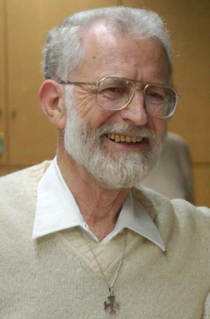

Home page
Nato a Rimini il 5 maggio 1938, sposato nel 1962 con Vanna Trevisan, ha quattro figli e quattro nipoti.
Laureato in Fisica nel 1961 presso l'Università di Pisa, borsista presso la Scuola Normale Superiore di Pisa, poi dal 1962 all’Università di Napoli dove dal 1973 è stato docente di Storia della Fisica presso la facoltà di Scienze FF.MM.NN. Ha svolto ricerche in Biofisica, Teoria dell'Informazione e degli automi, Storia della Fisica e Fondamenti della Scienza. È stato docente di Storia della Fisica presso vari corsi di specializzazione e presso la SICSI (2001-2004).
Ha svolto un programma di analisi critica della storia della scienza, a partire dagli scienziati principali della rivoluzione francese, alla ricerca di una alternativa alla scienza dominante. Ne è nata una nuova interpretazione dei fondamenti della scienza, i quali sono costituiti da due opzioni fondamentali (sul tipo di matematica: o con l’infinito in atto, o con solo quello potenziale; e sul tipo di organizzazione: o deduttiva, o rivolta a risolvere un problema fondamentale) che determinano quattro modelli di teoria scientifica. Con queste nuove categorie ha reinterpretato la storia delle scienze esatte, fino al primo novecento, secondo il pluralismo di quattro linee di sviluppo. Questi corrispondono ai quattro modelli di sviluppo indicati dai maggiori maestri della nonviolenza (Capitini, Lanza del Vasto, Galtung) come concetto basilare della teoria politica nonviolenta.
È stato membro del Comitato Scientifico del Centro Inter-Universitario di Ricerca sulla Bioetica di Napoli.
Autore di più di 400 pubblicazioni su: matematica, logica, storia e fondamenti delle scienze esatte, insegnamento delle teorie matematiche e fisiche, teorie della difesa; e di vari libri: Fisica, Didattica, Società, CLU, Napoli, 1976; Scienza e Guerra, EGA, Torino, 1983 (con G. Salio); Matematica della Guerra, EGA, Torino, 1987; Le due opzioni. per una storia popolare della scienza, La Meridiana, Molfetta BA, 1991; Curatela di Vent' anni di didattica universitaria di storia della fisica in Italia, in appendice a F. Bevilacqua, (ed.): Atti del XII Congresso Naz. di Storia della Fisica, La Goliardica, Pavia, 1993, 289-385; La teoria delle parallele secondo Lobacevskij, Danilo, Napoli, 1996 (con S. Cicenia); Lezioni di storia e fondamenti della fisica classica e moderna, E.DI.SU., Napoli, 2002 (seconda edizione 2004); La riforma della dinamica secondo G.W. Leibniz: testi originali e loro interpretazione moderna, Hevelius, Benevento, 2003; 363) Lagrange e la storia della meccanica, Progedit, Bari, 2005 (con D. Capecchi).
In pensione dal gennaio 2004, è docente a contratto dal 2001 di Strategie della difesa popolare nonviolenta nel corso di laurea di Scienze per la Pace dell’Università di Pisa e nel periodo 2004-2010 di Storia e Tecniche della nonviolenza al corso di laurea di Operazioni di Pace dell’Università di Firenze. Membro della rete Transcend di Galtung. È stato il primo presidente del Comitato ministeriale per la Difesa civile non armata e nonviolenta (2004-2005).
È, come la moglie, Alleato della Comunità dell’Arca di Lanza del Vasto dal 1976, partecipa alle attività italiane della Comunità dell'Arca (Campi estivi, incontri nazionali, manifestazioni per la pace e la nonviolenza, scritti). Ha approfondito il rapporto tra nonviolenza e vita interiore con scritti specifici: Atti di vita Interiore, Qualevita, Sulmona, 1977.
È stato attivo negli anni ’50 e '60 nel movimento studentesco, negli anni ’60 nelle lotte urbane a Napoli e per il riconoscimento giuridico dell’obiezione di coscienza (obiettore al giuramento degli insegnanti); negli anni ’70 nelle lotte sul problema energetico e per la qualificazione del servizio civile degli obiettori, negli anni ’80 nelle lotte contro la corsa agli armamenti e nelle attività formative (in particolare degli obiettori) per la difesa popolare nonviolenta, negli anni ’90 nella Campagna nazionale di obiezione alle spese militari e per la difesa popolare nonviolenta. È stato per dieci anni il responsabile del progetto di ricerca sulla Difesa popolare nonviolenta: su questi temi ha collaborato con la Fondazione Zancan e la Università della Pace di Rovereto, ha organizzato cinque convegni nazionali e nel 1993 ha lanciato il coordinamento degli obiettori Caschi bianchi all'estero.
Ha scritto articoli (i più numerosi su: Notizie dell'Arca, Rocca, Qualevita, Azione Nonviolenta, Mosaico di Pace, Il Tetto, Testimonianze) e libri sui temi delle suddette attività (in particolare: Le due opzioni, La Meridiana, Molfetta BA, 1991, L’obiezione fiscale. Quale difesa? Quale pace?, EGA, Torino, 1987 (con G. Mattai); e ha curato gli atti di alcuni convegni nazionali sulla difesa popolare nonviolenta presso le edizioni Fuorithema di Bologna, Editoria Universitaria di Venezia e Qualevita di Sulmona; è stato curatore della serie dei (32) Quaderni della difesa popolare nonviolenta, ed. La Meridiana, Molfetta; ha pubblicato Storia e tecniche della nonviolenta, Laurenziana, Napoli, 2006 e La difesa popolare nonviolenta, EGA, Torino, 2006.
Ha proposto una sua rifondazione della vita interiore in termini nonviolenti: Atti di vita Interiore, Qualevita, Sulmona; Le rivoluzioni nonviolente dell’ultimo secolo. I fatti e le interpretazioni, Nuova Cultura, Roma, 2010.
Born in Italy (Rimini) in 1938, graduated in Physics at University of Pisa in 1961, worked in Cybernetics, Mathematical Logic, Philosophy of Science, History of Science, Science Education, Psychology and Sociology. He was associate professor of History of Physics at Naples University “Federico II”. Upon the above subjects he wrote ten books (among which Le due opzioni, La Meridiana Molfetta BA, 1991 and La riforma della meccanica di G.W. Leibniz, Hevelius, Benevento, 2003) and three hundred papers proving the existence of an alternative science to the dominant one. He was contract professor in Pisa University about People non-violent defence (2001-20013) and in Florence University about History and Techniques of Non-violence (2004-2010). His last books are Storia e Tecniche della nonviolenza, Laurenziana, Napoli, 2006; Difesa Popolare nonviolenta, Ed. Gruppo Abele, Torino, 2006; Le rivoluzioni non violente nell’ultimo secolo (The non-violent Revolutions in the last Century), Aracne, Roma, 2010; La non violenza come riforma della religiosità cristiana (Non-violence as Reform of Christian Religiosity), Aracne, Roma 2020.
He was active in students’ movement and urban struggles in 60’s, in anti-nuclear power and nonviolent movements for the starting civil service in 70’s, in anti-arms’ race and in the campaign for conscientious objection to military taxes in 80’s, in research and initiatives for a people non-violent defense in 90’s. In 1978 founded with some others the Italian Peace Research Institute (IPRI), promoting mainly Peace education in Italian formal and informal environments. He belongs to some movements for peace (Italian Peace Research Institute, Allied of Ark Community of Lanza del Vasto, Transcend of J. Galtung). He was the first President of the Italian State’s Committee about People nonviolent defense in the years 2004-2005.
M.D. 1961 in Physics at Pisa University. Since 1964 he was charged of the courses: Automata Theory, Epistemology and Methodology, and then, since 1973 History of Physics at the Department of Theoretical Physics of the University of Naples: Associate professor of the last subject since 1987; retired in the year 2004. Contract professor of People nonviolent defense at Science for Peace of Pisa University (2001-2013) and History and Techniques of non violence at Operations of Peace of Florence University (2004-2010).
Experience of research and publications in Cybernetics, Automata theory, Logic, Biology, Epistemology, History and Foundations of Sciences, Bioethics, Social Sciences, Political Sciences, Linguistic, Philosophy, Theology. Author of almost five hundred scientific publications and a dozen books, whose the last one is Dalla Storia della Fisica ai Fondamenti della Scienza, Aracne, Roma, 2017 (From the History of Physics to the Foundations of Science). Details